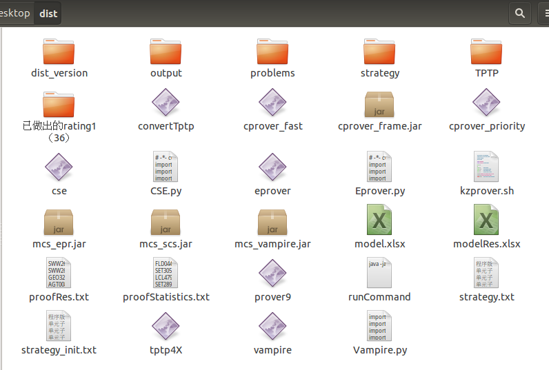

“Work. ”
前言
进行此项内容前，请确保已经完成环境的配置。
相关网站：TPTP官网
1、实验前准备
准备条件
拷贝好dist文件夹，确保内部具有正确的文件

problems文件夹中存放问题以及Axiom公理集，测试完output中会存放生成相关文件，strategy中存放策略集合，proofStatistics.txt内存放所有问题的证明时间。
在dist文件夹内打开命令行窗口，使用ls命令，检查文件是否具有可执行权限：
cse,eprover,tptp4X,以及相关jar包。
若没有权限，使用如下命令对文件授予权限：chmod +x 文件名
使用./eprover --verson或./vampire --verson查看对应软件的版本
使用命令行版本测试时，将cse替换为自己导出的cse
替换eprover的版本时，要将eprover和mcs_eprover.jar同时替换才正确。
3.1版本的Eprover会出现异常，则需要进行以下操作（重新打开一个终端，输入下述指令）：
|
|
然后使用kill指令将前三个icdc进程杀死
命令行版本测试命令
测试CSE和Eprover融合系统命令：
|
|
测试CSE和Vampire融合系统命令：
|
|
单独测试CSE系统命令：
|
|
其中260 20 为时间参数 如果那两个数值变为300 0，意味着是原始测出来的数据， 前一个数值代表eprover测的时间，后一个数值代表CSE测的时间， 300秒减去前两个数值所剩下的时间也是eprover参与的
2、代码修改（基础项）
基础代码修改项
| 必改项 | ||
|---|---|---|
| 2217 | Resolution.cpp | for(int i=0;i |
| 使用776行的main函数 | 替换原始800行的main函数 | |
| 验证检查 | 原始代码 | 修改后，会生成run文件 |
| Prover.cpp 319 |
if(1){ FileOp::delRunFiles(); } |
if(0){ FileOp::delRunFiles(); } |
| 选改项 | ||
| main.cpp | debug | 编译release |
| 216 | #define newTriDebug | //#define newTriDebug |
| 755 | //child = fork(); if (0 == 0) |
child = fork(); if (child == 0) { |
| 生成cse文件 |
文字变元输出
|
|